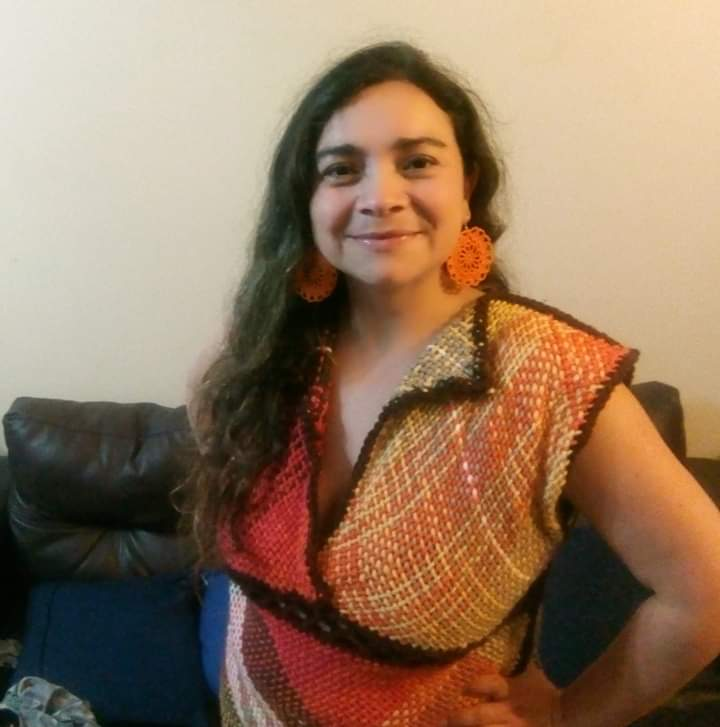

Curriculum Vitae

Mallén Arenas
Resumen
Despues de dedicarle varios años de estudio al área de las matemáticas, y luego
algunos otros a la academia. Debido a la crisis universitaria y a diversas
malas experiencias en la ciudad de Santiago. Decidí emigrar al sur donde pude
comenzar mi propio emprendimiento en un area completamente diferente. Lo cual
me permitió dedicarle más tiempo a mis hijos.
Datos Personales
-
Nombre: Mallén Arenas
-
Lugar de Nacimiento: Santiago
-
Fecha de nacimiento: 03/12/1979
Formación
-
1998-2002 Licenciatura en ciencias mención mateméticas, Universidad de Chile.
-
2003-2007 Doctorado en Estadística, Pontificia Universidad Católica de Chile.
Premios y Reconocimientos
-
2003-2006 Beca Doctoral Conicyt.
-
Primer Semestre 2007 Extensión Beca Doctoral Conicyt.
Antecedentes Laborales
-
2008 Postdoctorado en la Facultad de Matemáticas de la Pontificia
Universidad Católica de Chile.
-
2009-2010 Profesora Asistente Universidad de Concepción.
-
2011-2014 Instructora Adjunta de la Facultad de Ciencias de la Universidad
de Chile.
-
2015-2018 Profesora Adjunta de la Facultad de Ciencias de la Universidad
de Chile.
-
2020-2022 Dueña de emprendimiento en la ciudad de Valdivia. (Venta online
de artículos para manualidades)
Página y Redes Sociales
-
Pagina Web:
Terapia de Lana
-
Instagram: @terapiadelana
PORTAFOLIO